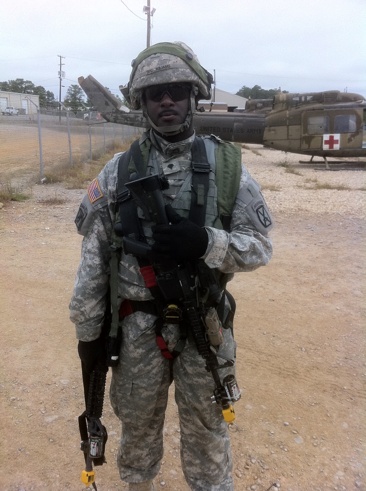

I was rasied in Brooklyn New York. My family is from Trinidad and Tobago. Joining the Army 2 years after high school, I was deployed to both Iraq during the Enduring Freedom campaign and in Haiti during the humanitarian crisis when they were hit by an earthquake in 2010. I was reassigned to FortDrum New York after my deployment. I served for 7 years reaching the rank of Sargent before being medically dischagred in 2013. I am father of 5 children with number 6 on the way.